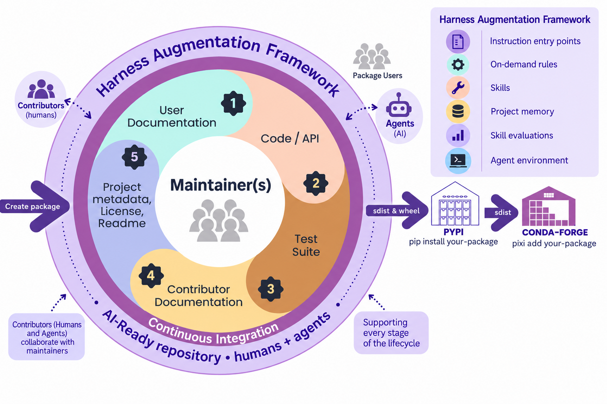

<link rel="stylesheet" href="../shared/slide-base.css">
<section data-slide="08-haf" aria-label="The Harness Augmentation Framework" class="slide" data-presenter="don">
  <div class="accent-bar-top"></div>
  <div class="content">
    <p class="eyebrow">The repo we'll build</p>
    <h1>Harness Augmentation Framework</h1>
    <div class="grid">
      <figure></figure>
      <div>
        <p class="lead">Six parts give an agent a way to find the rules and do the work.</p>
        <ol class="comps"><li>Instruction entry points</li><li>On-demand rules</li><li>Skills</li><li>Project memory</li><li>Skill evaluations</li><li>Agent environment</li></ol>
        <p class="muted">The package is still at the center. We'll build the support around it, one part at a time.</p>
      </div>
    </div>
  </div>
  <style>
    
    section[data-slide="08-haf"] { background: linear-gradient(105deg, rgba(183,165,122,0.18), transparent 36%), var(--surface-secondary); padding: var(--space-16) var(--space-20); }
    section[data-slide="08-haf"] .content { position: relative; z-index: var(--z-raised); display: flex; flex-direction: column; width: 100%; height: 100%; }
    section[data-slide="08-haf"] h1 {
      font-family: var(--font-display); font-size: var(--slide-title); font-weight: var(--font-extrabold);
      letter-spacing: var(--tracking-tight); line-height: var(--leading-tight); color: var(--text-brand);
      margin: var(--space-2) 0 var(--space-6);
    }
    section[data-slide="08-haf"] p, section[data-slide="08-haf"] li { font-size: var(--slide-body); line-height: var(--leading-relaxed); color: var(--text-primary); }
    section[data-slide="08-haf"] .lead { font-size: var(--slide-lead); }
    section[data-slide="08-haf"] .muted { color: var(--text-secondary); }
    section[data-slide="08-haf"] .source { margin-top: auto; padding-top: var(--space-4); }
    
    section[data-slide="08-haf"] .eyebrow, section[data-slide="08-haf"] h2, section[data-slide="08-haf"] .pairs dt { color: var(--text-brand); }
    
    section[data-slide="08-haf"] .grid { flex: 1; display: grid; grid-template-columns: 1.45fr 1fr; gap: var(--space-12); align-items: center; min-height: 0; }
    section[data-slide="08-haf"] figure { margin: 0; }
    section[data-slide="08-haf"] figure img { max-width: 100%; max-height: 70vh; object-fit: contain; }
    section[data-slide="08-haf"] .lead { margin-bottom: var(--space-6); }
    section[data-slide="08-haf"] .comps { list-style: none; counter-reset: c; margin-bottom: var(--space-6); }
    section[data-slide="08-haf"] .comps li { counter-increment: c; position: relative; padding-left: var(--space-12); margin-bottom: var(--space-3); font-size: var(--slide-body); }
    section[data-slide="08-haf"] .comps li::before { content: counter(c); position: absolute; left: 0; top: -0.05em; font-family: var(--font-compressed); font-weight: var(--font-bold); font-size: var(--slide-subtitle); color: var(--color-gold-700); }
  </style>
</section>
